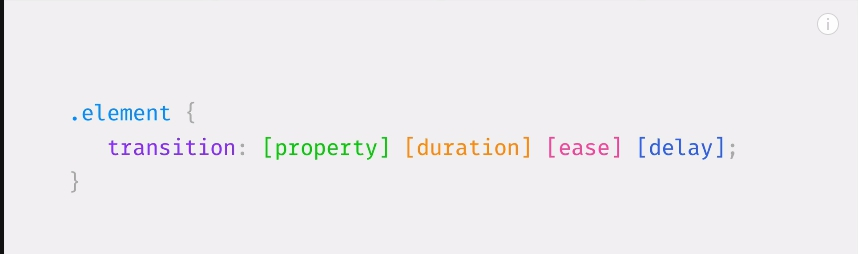
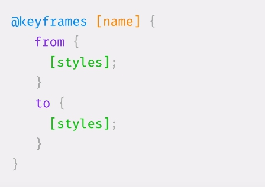
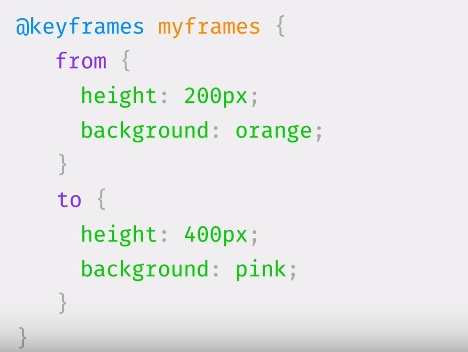

Cвойство transition это краткая запись четырех свойств:
property - указывает список свойств, которые будут анимироваться; свойства, которые здесь не указаны, будут изменяться обычным образом. Можно анимировать все свойства для конкретного элемента, указав значение all. Если вы не указали ни одного свойства, то по умолчанию используется значение all.
duration - задаёт значение продолжительности анимации, время можно указывать в секундах или миллисекундах.
timing-function - временная функция, указывает точки ускорения и замедления за определенный период времени для контроля изменения скорости анимации. Проще говоря, с помощью этого свойства можно указать поведение для анимации.
delay - задаёт задержку времени до начала анимации, можно указывать в секундах или миллисекундах..
Лучшие свойства для анимации
Методы запуска анимации:
hover, focus, active
Добавить class средствами js
CSS animations позволяют делать более сложные анимации, нежели CSS transitions. Весь секрет в @keyframes. Правило @keyframes позволяет создавать анимацию с помощью набора ключевых кадров, то есть описывает состояние объекта в определенный момент времени
Есть 8 свойств, которые позволяют контролировать CSS animations:
animation-name — здесь указвается имя анимации, которое связывает правило @keyframes с селектором.animation-iteration-count — задаёт количество повторов анимации, значение по умолчанию 1. Значение infinite означает, что анимация будет проигрываться бесконечно.animation-direction — задаёт направление анимации.animation-play-state — данное свойство управляет остановкой и прогрыванием анимации. Есть два значения, running (анимация проигрывается, по умолчанию) и paused (останавливает анимацию).animation-fill-mode — устанавливает, какие CSS-свойства будут приминены к объекту до или после анимации.animation-duration - продолжительность анимацииanimation-timing-function - функция распределения скорости по времениanimation-delay - задержка анимацииСинтаксис @keyframes
 